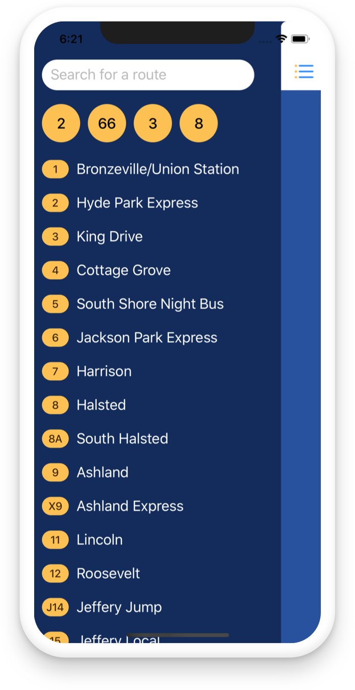

All Aboard
A Simple Chicago Bus Tracker
"Finally, a beautiful and simple way to find out when my bus is arriving."
"It's the transit app in Chicago I've been waiting for."
"The location based assistance makes it very intuitive. Well played."
An
open source
thing by
Jordan Fulghum
.
